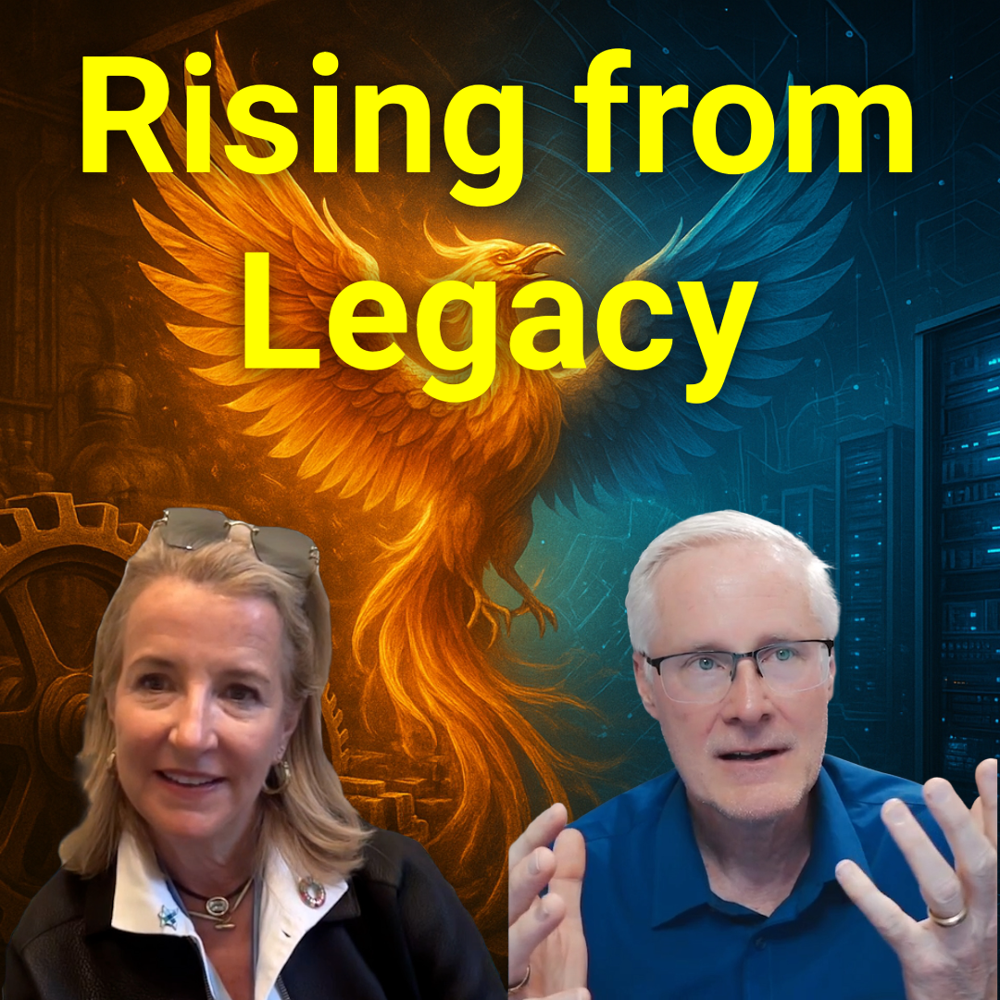

#297 The Myth of Easy AI: What Leaders Keep Getting Wrong
Everyone’s racing to implement AI — but few succeed. Dr. Ashwin Mehta, Founder and CEO of Metrology, argues that the biggest barrier isn’t data or algorithms — it’s the illusion of simplicity. In this insightful conversation with Dr. Darren Pulsiphe..
Watch Now Listen Now

#296 Rising from Legacy: How Culture Fuels Transformation
Dr. Darren welcomes the remarkable Jane Millard, CEO of Turtle, a 100-year-old family-owned business that has successfully evolved over the years. The discussion delves into Jane's captivating background, from dancer and choreographer to leader in th..
Watch Now Listen Now